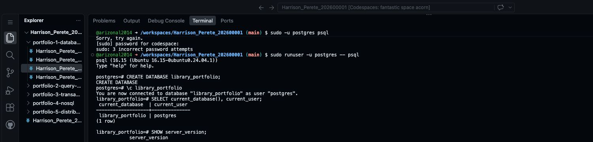

Step 8 Set up PostgreSQL
Portfolio 1 in Section 4 of the assessment brief requires tables, keys and constraints. This step sets up PostgreSQL and creates an empty database to hold your tables.
Run these commands in the Codespaces terminal, not your computer's terminal.
In Codespaces, open Terminal → New Terminal from the main menu if you cannot see the terminal panel. Click inside the terminal before typing.
Copy one command, press Enter, then wait for it to finish. Do not copy the surrounding backticks or type the prompt symbols such as $ or postgres=#.
Already using PostgreSQL elsewhere? Connect to a new practice database there and continue to the table-creation step. The Ubuntu setup commands below are only for Codespaces.
1. Install PostgreSQL
The terminal initially shows a line ending in $. This is where the installation commands go. After each command finishes, a new $ line appears, ready for the next command.
sudo apt-get updateThis refreshes the list of available software. Wait for it to finish.
sudo apt-get install -y postgresqlThis installs PostgreSQL. It may take a few minutes. PostgreSQL's Ubuntu installation guide.
If installation says policy-rc.d denied execution of start, continue to Step 2. Codespaces can block automatic startup during installation; the next command starts PostgreSQL explicitly.
2. Start the database server
PostgreSQL must be running before you can use it. Enter:
sudo service postgresql start3. Open PostgreSQL
sudo runuser -u postgres -- psqlIf you see postgres=#, PostgreSQL is running and the connection worked. This is where you type SQL commands, such as CREATE DATABASE.
The command opens PostgreSQL using its local administrator account, called postgres. This connection does not need a database password. It is for this practice workspace.
4. Create your practice database
A database is a named space that holds your tables. The library example uses library_portfolio.
For your own case study, ask your AI:
My MIT 8103 case study is: [INSERT YOUR CASE STUDY NAME].
Choose one short PostgreSQL database name for it.
Use only lowercase letters and underscores, ending in _portfolio.
Start with a letter. Do not include spaces, my name or my student ID.
Return the name, followed by these two commands using that exact name:
1. CREATE DATABASE the_name;
2. \c the_name
Do not add other commands or sample output.For example, a clinic case study could use clinic_portfolio. Keep your chosen name for the later steps.
At postgres=#, enter the first command from the AI response. For the library example, it is:
CREATE DATABASE library_portfolio;Keep the semicolon at the end. PostgreSQL uses it to know the SQL command is complete.
Expected result: CREATE DATABASE. If it says the database already exists, do not create it again; continue with the connection command below.
Now enter the second command, replacing the name if yours is different:
\c library_portfolio\c means connect to that database. The prompt changes to library_portfolio=#, or your chosen name followed by =#.
Check the connection:
SELECT current_database(), current_user;The result should show your chosen database name and the user postgres.
Here is the result for the library example. Your database name may be different.

Keep this PostgreSQL session open. The next step creates your tables here.
5. Save evidence
Take a screenshot of the connection-check query and its result. It should show your database name and the user postgres. Begin the screenshot filename with your required name and student ID, for example Harrison_Perete_202600001_P1_DatabaseConnection.png.
In Codespaces Explorer, right-click portfolio-1-database-design → New Folder… and name it screenshots. Right-click that new folder → Upload… and select your picture. Keep the SQL and design files in the parent Portfolio 1 folder.
Keep the same Codespace for the practical work. GitHub saves your project files, not the running database. Rebuilding or deleting the Codespace can remove the installed server or database; save scripts and back up data first.
When returning after the Codespace has stopped, use these commands at the terminal's $ prompt:
sudo service postgresql start
sudo runuser -u postgres -- psqlThen enter \c library_portfolio inside PostgreSQL, using your own database name. There is no need to repeat CREATE DATABASE.